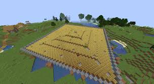

Quick Facts
• Automated farms can save time in many games
• In Hypixel Skyblock, they do not function properly
• Manual farming remains the most efficient method
Why Don't They Work?
Hypixel Skyblock has specific mechanics that prevent automated farming from being effective. Crop growth is slow without manual interaction, and using minions is the only way to automate aspects of farming.
Farm Efficiency Comparison
| Method | Efficiency | Time Required |
|---|---|---|
| Manual Farming | Very High | Active Play |
| Automated Farms | Low | Doesn't Work Properly |
| Minions | Moderate | Passive Income |
Future of Farming
While automation works in many games, Hypixel Skyblock requires manual farming or minion use for the best results. Future updates may change this, but for now, active farming is key.